Representações
Toda metaheuristica precisa de uma codificação (representação) para uma solução. A escolha da codificação da solução desempenha um papel crucial no desempenho dos algoritmos. Podem existir diversos tipos de representação para um mesmo problema. Uma boa representação deve possuir as seguintes características:
- Completude: todas as soluções de um problema (pelo menos as factíveis) devem ser passíveis de representação.
- Conectividade: é necessário que exista um caminho entre quaisquer duas soluções.
- Eficiência: a representação precisa ser de fácil manipulação pelos operadores de movimento. Também deve facilitar o cálculo da função objetivo e verificação de violação de restrições.
Representações
Existem muitas codificações diretas para famílias de problemas de otimização tradicionais:
Representações
Existem muitas codificações diretas para famílias de problemas de otimização tradicionais:
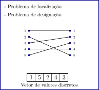
Representações
Existem muitas codificações diretas para famílias de problemas de otimização tradicionais:
Representações
Existem muitas codificações diretas para famílias de problemas de otimização tradicionais:
Representações
Uma escolha inteligente de codificação para uma solução, pode até mesmo reduzir o espaço de busca do problema. Considere o problema das 8 rainhas:
O problema (ou quebra cabeça) das 8 rainhas consiste em posicionar 8 rainhas em um tabuleiro de xadrez, de forma que nenhuma delas seja capaz de capturar nenhuma outra.
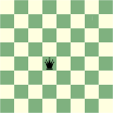
Representações
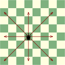
Lembrando dos movimentos da rainha em um jogo de xadrez.
Representações
Como poderia ser a codificação para a resposta deste problema?
Representações
A solução para esse problema representa a designação de 8 rainhas no tabuleiro. Inicialmente, poderíamos codificar a solução como um vetor de coordenadas:
Em que
representa a posição cartesiana da rainha \(i\), com \(x_i,y_i \in \{1,...,8\}\) representando a numeração da linha e da coluna da rainha no tabuleiro.
Representações
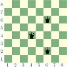
Por exemplo, as rainhas acima seriam representadas como:
Representações
Com essa representação, o número de possíveis soluções (espaço de busca) é de \(64^8\), mais de 4 bilhões de possibilidades.
Representações
Ainda, para verificar a factibilidade de cada solução, temos de computar se nenhuma rainha se encontra na horizontal, na vertical ou na diagonal entre si.
Representações
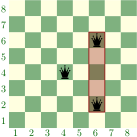
Note que nunca uma solução em que uma rainha está na mesma coluna de outra será factível. Será que conseguimos incorporar essa característica diretamente na codificação da solução?
Representações
Seja a nova solução representada pela codificação:
Em que cada índice \(i\) do vetor indica uma coluna. E o elemento \(p_i\) indica, para aquela coluna, em qual linha existe uma rainha posicionada.
Representações
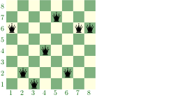
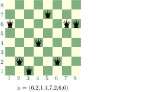
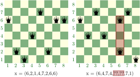
Como a solução acima poderia ser representada pela nova codificação?
Note que algumas soluções naturalmente infactíveis, nem podem ser representadas pela nova codificação!
Nenhuma solução com rainhas na mesma coluna pode ser representada com essa codificação.
Representações
Isso reduz o espaço de busca de 4 bilhões de soluções para \(8^8\), que é aproximadamente 16 milhões de possibilidades.
Será que é possível pensar em uma codificação que reduz ainda mais o espaço de busca?
Pela mesma premissa passada, sabemos que nenhuma solução que mantenha duas rainhas na mesma linha é uma solução factível.
Seja a nova codificação uma permutação de 8 elementos:
Em que o significado permanece o mesmo da codificação passada, porém, em se tratando de uma permutação, garantimos que nenhuma linha será igual.
Representações
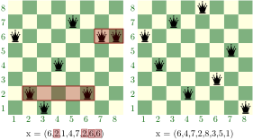
Não conseguimos mais representar a primeira solução nessa nova codificação: ela não é uma permutação de elementos!
Representações
Agora, temos que nenhuma solução com duas rainhas na mesma linha e na mesma coluna podem ser representadas. Isso reduz o espaço de busca novamente, de 16 milhões para 8! = 40.320 possibilidades. A única verificação que deve ser feita é em relação à diagonal das rainhas.
\( \left\{{\def\arraystretch{1.242}\kern-0.4em\begin{array}{ll} \textsf{{\color{#0061a5}\textsf{\textbf{Cod. 1}}:} 4 bilhões de possibilidades} \\ \textsf{{\color{#0061a5}\textsf{\textbf{Cod. 2}}:} 16 milhões de possibilidades} \\ \textsf{{\color{#0061a5}\textsf{\textbf{Cod. 3}}:} 40.320 possibilidades} \\ \end{array}\kern-0.5em}\right. \)
A escolha adequada de codificação da solução impacta fortemente no desempenho dos algoritmos. Pelo exemplo acima, conseguimos reduzir substancialmente o espaço de busca do problema, simplesmente alterando a forma de representar uma solução.
Classificações
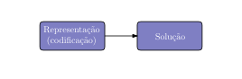
De forma geral, temos uma codificação, que é uma representação computacional de uma solução.
Classificações
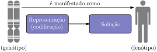
Uma terminologia muito usada para esses conceitos, provenientes da biologia (e dos algoritmos genéticos), se refere a representação como genótipo e a solução como fenótipo.
Lembrando que o genótipo diz respeito aos genes de um individuo, e o fenótipo às características do indivíduo que são manifestadas pelos genes. O fenótipo é influenciado pelo meio, ou seja, um mesmo genótipo pode gerar diferentes fenótipos.
Isso nos remete às soluções: pode ocorrer de uma mesma codificação representar diferentes soluções. Todos os casos são apresentados a seguir, no chamado mapeamento representação-solução
Classificações
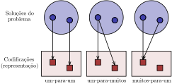
O mapeamento representação-solução pode ser de um dos tipos mostrados na imagem acima
Classificações
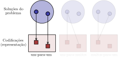
(Um-para-um): esse é o mapeamento clássico. Uma solução é representada por uma única codificação, e toda codificação representa somente uma solução. Usualmente esse é o esperado, pois toda representação que um algoritmo encontra é única.
Classificações
EXEMPLO: A representação matriz enfermeiras x dias para o problema de determinação de escalas de enfermeiras é do tipo um-para-um.
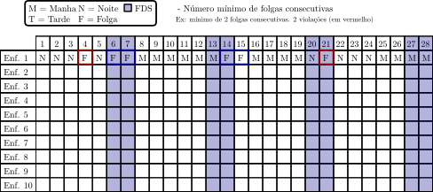
EXEMPLO: A representação binária para os problemas da mochila também são mapeamentos um-para-um. Considerando a codificação:
Só existe uma solução para essa codificação: carregar os itens 1,2 e 4, e nenhum outro na mochila.
Classificações
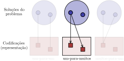
(Um-para-muitos): nesse mapeamento, uma solução pode ser representada por mais de uma codificação. A redundância na codificação vai aumentar o espaço de busca, e consequentemente pode afetar a eficiência da metaheuristica.
Classificações
EXEMPLO: Em problemas de particionamento de conjunto, precisamos particionar um conjunto \(S\) de elementos em subconjuntos disjuntos \(s_i\), onde \(\cup s_i = S\) e \(s_i \cap s_j = \emptyset\). O bin-packing é um problema de particionamento de conjuntos. Seja os itens:
Podemos usar a seguinte codificação para indicar que os itens 0 e 3 fazem parte de um conjunto, e os itens 1 e 2 de outro:
No entanto, a codificação:
Indica a mesma solução. Essa codificação é então um exemplo de um-para-muitos.
Classificações
EXEMPLO: A representação permutacional para os problemas do caixeiro viajante se enquadra no mapeamento um-para-muitos. Considerando as codificações:
\( \left\{{\def\arraystretch{1.242}\kern-0.4em\begin{array}{ll} x_1 = [0,3,2,1,4,5,6]\\ x_2 = [3,2,1,4,5,6,0] \\ x_3 = [2,1,4,5,6,0,3] \\ x_4 = [0,6,5,4,1,2,3] \\ \end{array}\kern-0.5em}\right. \)
Todas são representações de uma mesma rota, ou seja, é mais uma representação um-para-muitos - muita redundância.
DESAFIO: Existe algo que poderia ser feito (alguma convenção), para eliminar a redundância desta representação?
Classificações
Se convencionarmos que: (a) o primeiro ponto da representação sempre deve ser o zero, então já eliminamos boa parte das redundâncias. Convencionando ainda (b) que o segundo ponto sempre deve ser menor do que o último, elimina todas as representações redundantes.
\( \left\{{\def\arraystretch{1.242}\kern-0.4em\begin{array}{ll} x_1 = [0,3,2,1,4,5,6]\\ x_2 = [3,2,1,4,5,6,0] \\ x_3 = [2,1,4,5,6,0,3] \\ x_4 = [0,6,5,4,1,2,3] \\ \end{array}\kern-0.5em}\right. \)
\( \left\{{\def\arraystretch{1.242}\kern-0.4em\begin{array}{ll} x_1 = [0,3,2,1,4,5,6]\\ \cancel{x_2 = [3,2,1,4,5,6,0]} \\ \cancel{x_3 = [2,1,4,5,6,0,3]} \\ x_4 = [0,6,5,4,1,2,3] \\ \end{array}\kern-0.5em}\right. \)
\( \left\{{\def\arraystretch{1.242}\kern-0.4em\begin{array}{ll} x_1 = [0,3,2,1,4,5,6]\\ \cancel{x_2 = [3,2,1,4,5,6,0]} \\ \cancel{x_3 = [2,1,4,5,6,0,3]} \\ \cancel{x_4 = [0,6,5,4,1,2,3]} \\ \end{array}\kern-0.5em}\right. \)
Classificações
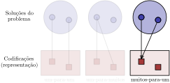
(Muitos-para-um): nesta classe, várias soluções podem ser representadas por uma mesma codificação. Essas codificações são caracterizadas por uma falta de detalhes em relação ao problema original, algumas informações não são explicitamente representadas.
Classificações
(Muitos-para-um): em alguns casos isso reduz o espaço de busca original, aumentando a eficiência da metaheuristica. Essa classe de representações também é chamada de representações indiretas.
Representações Indiretas
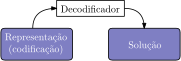
Ao se usar uma codificação indireta, a representação não é uma solução completa do problema. Um decodificador é necessário para expressar a solução dada pela codificação. De acordo com as informações na representação, o decodificador pode ter mais ou menos trabalho para derivar uma solução completa.
Representações Indiretas
O decodificador pode ser estocástico (não-determinístico), o que implica que a cada decodificação uma solução diferente pode ser derivada. Representações indiretas são muito usadas em problemas com muitas restrições, como scheduling.
Representações Indiretas
EXEMPLO: Considere o problema de job-shop scheduling (JSS):
Job-shop scheduling: No JSS, um conjunto de n jobs devem ser processados em m máquinas. Cada job é composto de um número \(n_i\) de operações, sendo que cada operação deve ser processada em uma máquina específica. A ordem de execução das operações deve ser respeitada. Um objetivo é minimizar o makespan, ou seja, o tempo de termino da última tarefa.
Representações Indiretas
Por exemplo, considere a instância para o problema com 3 jobs e 3 máquinas, dada pela Tabela acima. O job 1 deve ser processado nas máquinas \(M1 \rightarrow M2\), levando um tempo de 2 unidades na máquina 1 e 3 na máquina 2.
Qual poderia ser uma codificação para a solução deste tipo de problema?
Representações Indiretas
Primeiramente vamos tentar visualizar uma possível solução. Para problemas de scheduling, fica fácil representar as soluções por meio de gráficos de Gannt, em que os recursos são as máquinas. Uma possível solução é mostrada na Figura (com custo de 9):
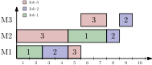
Representações Indiretas
Uma representação (direta) para o problema, pode ser uma lista de máquinas. Cada máquina, por sua vez, mantém uma lista em que cada elemento mantém os 3 valores:
Em que:
\( \left\{{\def\arraystretch{1.242}\kern-0.4em\begin{array}{ll} \textsf{{\color{#0061a5}j}:} & \textsf{Job que está sendo processado} \\ \textsf{{\color{#0061a5}o}:} & \textsf{Tarefa do job que está sendo processada} \\ \textsf{{\color{#0061a5}b}:} & \textsf{Tempo de inicio do processamento} \\ \textsf{{\color{#0061a5}e}:} & \textsf{Tempo de término do processamento} \end{array}\kern-0.5em}\right. \)
Representações Indiretas
Uma representação (direta) para o problema, pode ser uma lista de máquinas. Cada máquina, por sua vez, mantém uma lista em que cada elemento mantém os 3 valores:
Por exemplo \( \left[ \begin{array}{cccccc} {\color{#b6321d}(3,3,6,7)} \end{array} \right]\) O Job 3 (primeiro 3), 3\(^a\) etapa (segundo 3), começa a sua execução no período 6 e termina no período 7. OBS: Como as marcações de tempo na figura estão ”entre”os períodos, o inicio e fim são contabilizados pelos ”segmentos”completos.
Representações Indiretas
Uma possível representação indireta para soluções, consiste em um vetor de prioridades de execução dos jobs, por exemplo:
Um decodificador possível poderia funcionar da seguinte forma:
Seguindo a ordem de jobs dada pela representação, atribua cada operação do job ao instante de tempo mais cedo possível na máquina.
Representações Indiretas
A solução decodificada para a representação acima fica (com custo de 14):
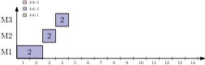 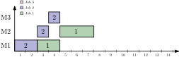 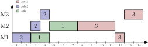
Classificações
Ou seja, as representações indiretas (muitos para um), usualmente são usadas quando uma representação explícita para o problema é muito complicada. Para utilizá-las é necessário criar um decodificador (o que pode ser a parte mais trabalhosa).
Representações Indiretas
EXERCÍCIO Algumas considerações em relação a esta representação indireta:
- Em qual categoria ela se enquadra? Um-para-um, um-para-muitos ou muitos-para-um?
- Lembrando que uma boa codificação deve possuir as 3 características:
- Completude
- Conectividade
- Eficiência
Ela satisfaz a primeira característica? Se não, dê um exemplo do motivo.
- Escreva a decodificação de mais 2 representações (quaisquer) para o exemplo do JSS - crie mais duas soluções codificadas e decodifique-as - qual foi a melhor?
Atividade 1
- Considerando o artigo 2010 - Application of Genetic Algorithm for the Bin Packing Problem with a new representation scheme - Mohamadi, leia e entenda as 3 formas de representar uma solução para o problema do bin-packing.
- Uma codificação indireta muito utilizada é chamada de random keys (proposta por Beam). Considerando o artigo 1994 - Genetic Algorithms and Random Keys for Sequencing and Optimization - Beam, entenda como representar uma solução para o single machine scheduling problem, e para o multiple machine scheduling problem usando as random-keys.
- Considerando o artigo 2012 - A parallel multi-population biased random-key genetic algorithm for a container loading problem, leia o parágrafo indicado, e relacione com os conceitos explicados em aula.
- Considerando o artigo 2007 - A hybrid genetic and variable neighborhood descent algorithm for flexible job shop scheduling problems - Gao, entenda a codificação dos autores para o flexible-job-shop scheduling (é a mesma coisa que o JSS, porém cada operação pode ser executada por mais de uma máquina).